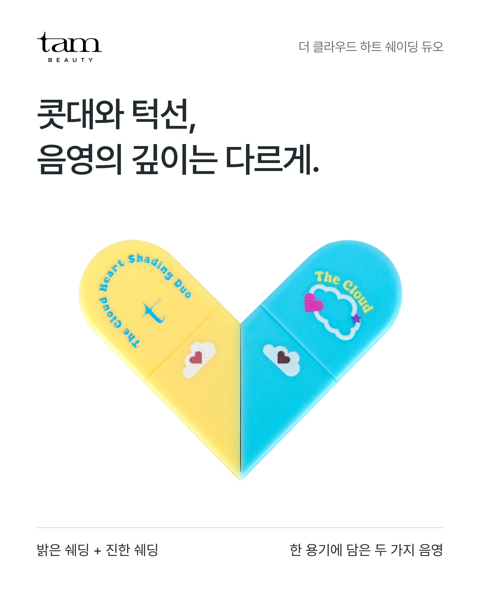
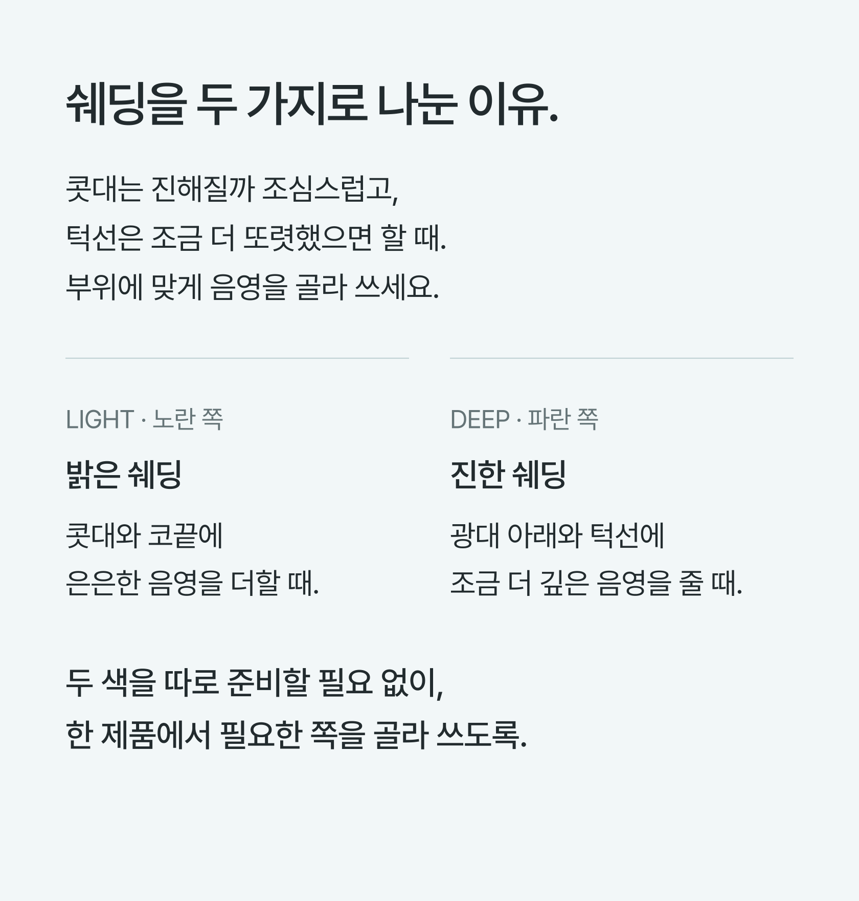
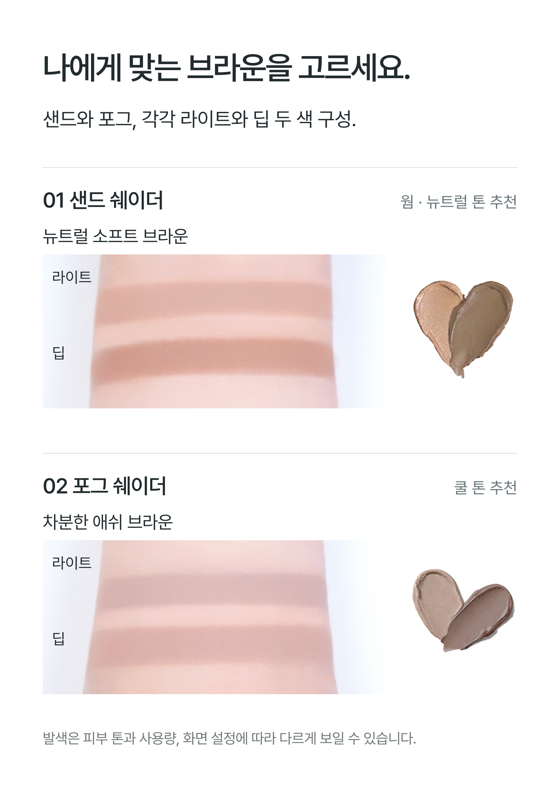
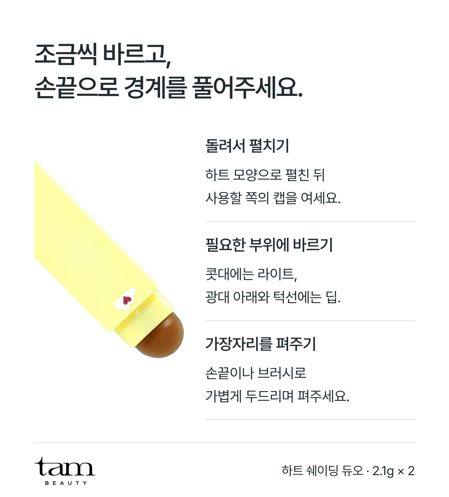

다이메티콘, 폴리메틸실세스퀴옥세인, 합성왁스, 티타늄디옥사이드, 펜타에리스리틸테트라아이소스테아레이트, 폴리글리세릴-2트라이아이소스테아레이트, 다이페닐실록시페닐트라이메티콘, 비닐다이메티콘/메티콘실세스퀴옥세인크로스폴리머, 폴리페닐실세스퀴옥세인, 마이크로크리스탈린왁스, 카프릴릭/카프릭트라이글리세라이드, 다이아이소스테아릴말레이트, 황색산화철, 흑색산화철, 카나우바왁스, 세틸피이지/피피지-10/1다이메티콘, 솔비탄올리베이트, 적색산화철, 다이메티콘크로스폴리머, 알루미늄하이드록사이드, 폴리하이드록시스테아릭애씨드, 마이카, 에틸헥실글리세린, 레시틴, 아이소스테아릭애씨드, 아이소프로필미리스테이트, 에틸헥실팔미테이트, 폴리글리세릴-3폴리리시놀리에이트, 메티콘, 카카오씨버터, 토코페릴아세테이트, 아보카도오일, 스위트아몬드오일, 하이드로제네이티드식물성오일
다이메티콘, 폴리메틸실세스퀴옥세인, 합성왁스, 카프릴릭/카프릭트라이글리세라이드, 펜타에리스리틸테트라아이소스테아레이트, 다이페닐실록시페닐트라이메티콘, 비닐다이메티콘/메티콘실세스퀴옥세인크로스폴리머, 폴리페닐실세스퀴옥세인, 마이크로크리스탈린왁스, 폴리글리세릴-2트라이아이소스테아레이트, 티타늄디옥사이드, 다이아이소스테아릴말레이트, 황색산화철, 흑색산화철, 카나우바왁스, 적색산화철, 세틸피이지/피피지-10/1다이메티콘, 솔비탄올리베이트, 다이메티콘크로스폴리머, 폴리하이드록시스테아릭애씨드, 마이카, 알루미늄하이드록사이드, 에틸헥실글리세린, 레시틴, 아이소스테아릭애씨드, 아이소프로필미리스테이트, 에틸헥실팔미테이트, 폴리글리세릴-3폴리리시놀리에이트, 메티콘, 토코페릴아세테이트, 아보카도오일, 카카오씨버터, 스위트아몬드오일, 하이드로제네이티드식물성오일
다이메티콘, 폴리메틸실세스퀴옥세인, 합성왁스, 티타늄디옥사이드, 펜타에리스리틸테트라아이소스테아레이트, 다이페닐실록시페닐트라이메티콘, 비닐다이메티콘/메티콘실세스퀴옥세인크로스폴리머, 폴리글리세릴-2트라이아이소스테아레이트, 폴리페닐실세스퀴옥세인, 마이크로크리스탈린왁스, 카프릴릭/카프릭트라이글리세라이드, 다이아이소스테아릴말레이트, 황색산화철, 흑색산화철, 카나우바왁스, 세틸피이지/피피지-10/1다이메티콘, 솔비탄올리베이트, 다이메티콘크로스폴리머, 적색산화철, 알루미늄하이드록사이드, 폴리하이드록시스테아릭애씨드, 마이카, 에틸헥실글리세린, 레시틴, 아이소스테아릭애씨드, 아이소프로필미리스테이트, 에틸헥실팔미테이트, 폴리글리세릴-3폴리리시놀리에이트, 메티콘, 카카오씨버터, 토코페릴아세테이트, 아보카도오일, 스위트아몬드오일, 하이드로제네이티드식물성오일
다이메티콘, 폴리메틸실세스퀴옥세인, 합성왁스, 티타늄디옥사이드, 펜타에리스리틸테트라아이소스테아레이트, 다이페닐실록시페닐트라이메티콘, 비닐다이메티콘/메티콘실세스퀴옥세인크로스폴리머, 폴리페닐실세스퀴옥세인, 폴리글리세릴-2트라이아이소스테아레이트, 마이크로크리스탈린왁스, 카프릴릭/카프릭트라이글리세라이드, 다이아이소스테아릴말레이트, 황색산화철, 흑색산화철, 카나우바왁스, 적색산화철, 세틸피이지/피피지-10/1다이메티콘, 솔비탄올리베이트, 다이메티콘크로스폴리머, 알루미늄하이드록사이드, 폴리하이드록시스테아릭애씨드, 마이카, 에틸헥실글리세린, 레시틴, 아이소스테아릭애씨드, 아이소프로필미리스테이트, 에틸헥실팔미테이트, 폴리글리세릴-3폴리리시놀리에이트, 메티콘, 카카오씨버터, 토코페릴아세테이트, 아보카도오일, 스위트아몬드오일, 하이드로제네이티드식물성오일